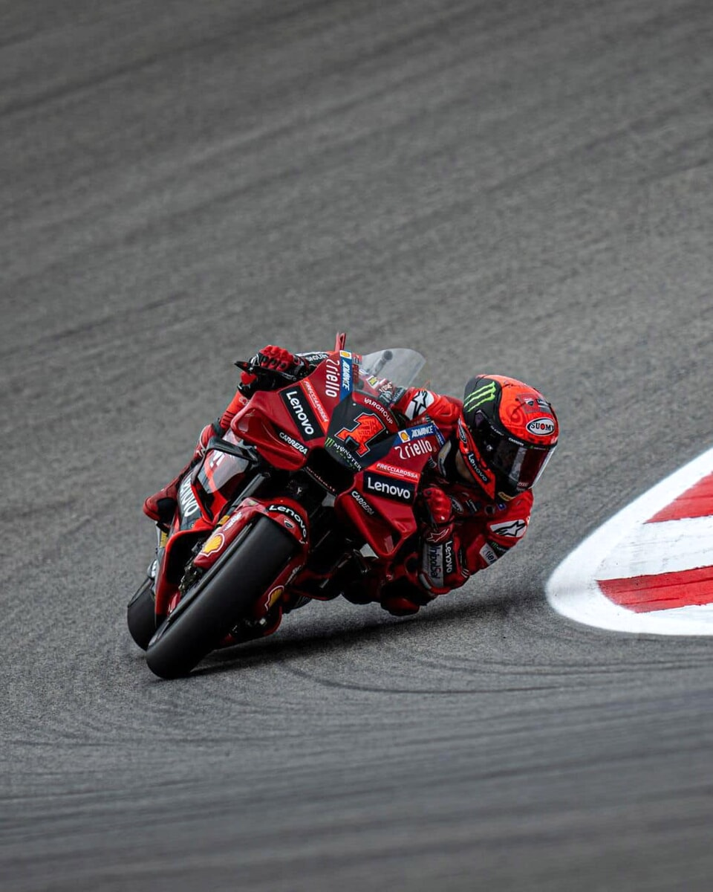

Francesco Bagnaia
pilota motociclistico
Francesco Bagnaia, noto come Pecco (Torino, 14 gennaio 1997), è un pilota motociclistico italiano.
Vincitore di 2 titoli mondiali: nel 2018 in Moto2 e nel 2022 in MotoGP. È il primo italiano, dopo 50 anni, a vincere su una moto italiana nella classe regina.
Gli inizi
Cresciuto a Chivasso, comincia a farsi notare nelle categorie Minimoto e MiniGP, della quale diventa campione europeo nel 2009.
- Nel 2010 corre nel campionato mediterraneo 125 PreGP, concludendo secondo.
- Nel 2011 e nel 2012 prende parte al campionato spagnolo velocità, classificandosi al terzo posto finale, prima nella classe 125 e poi nella classe Moto3, e ottenendo in ciascuna stagione una vittoria in gara.
Con il secondo posto conquistato in Australia dopo una bagarre all'ultimo giro, Bagnaia consolida la prima posizione in classifica: "Il sorpasso all'ultimo giro è stato perfetto", ha detto a Sky.
"Ho aspettato, sapendo che prima o poi sarei arrivato davanti". Sulla strategia di Martin: "Con la soft mi aspettavo il degrado a pochi giri dalla fine, anche perché dietro abbiamo girato molto forte".
Infine sulla moto: "Essere a posto a Phillip Island è difficile: abbiamo fatto il massimo"
intervista a bagnaia
di più su di lui
